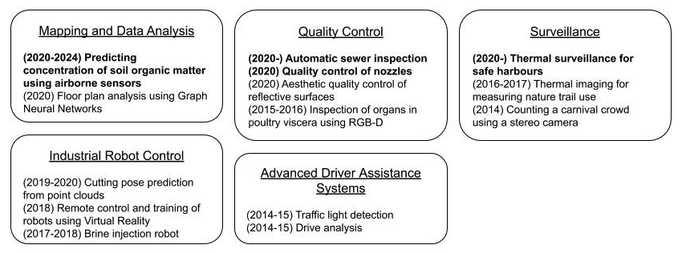
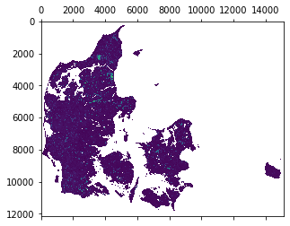
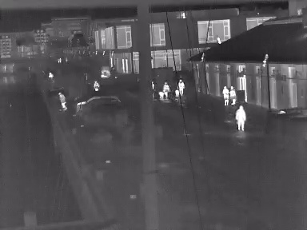

Projects
The idea here is to give an overview of the topics and projects where I have been involved since I wrote my Master's thesis in 2015. Current and active projects are highlighted.

(2020-2024) Predicting concentration of soil organic matter using airborne sensors
As part of the Grand Solutions project "Reducing and Documenting CO2 emissions from Peatlands (ReDoCO2)" I am tasked with building models that, among other things, can predict the soil organic content from aerial measurements such as TEM and Gammaray. The model must support government decisions regarding acquisition and suspension of agricultural land with conditions that produce substantial CO2 emissions if in use and which have the potential to turn into peatlands if left along. Peat is 10 times as efficient at sequestering CO2 as forrest.

Although the project is focused on optimising land use for around CO2 emissions, I see the potential as much larger. Accurately predicting land properties and optimal use could have a great impact on the efficiency of agriculture and nature restoration. Technically, this will require:
- Development of methods for processing and modelling enormous amounts of spatial and temporal data of many different types and representations.
- First step is to construct a model that can group different land types from the data itself without the need for human guidance.
Surveillance
Historically, the VAP lab at AAU has been focused on the applications of computer vision for surveillance. While the diversity of projects has as increased significantly during the last five years, surveillance remains the main application area. Naturally, I have been involved in some of these projects. My current interest being:
- Development of methods that require limited supervision and will continue to function all year in spite of sporadic, periodical or continues changes.
Thermal surveillance for safe harbours
Using thermal cameras mounted along the waterfront we seek to build automatic systems that can provide early warning in case of abnormal activity.

Supervised student projects
Group work and problem based learning is an integral part of Aalborg University. For this reason students across all semesters must collaborate on large group projects ranging from 280 - 840 man-hours per student. As a researcher at Aalborg University it is customary to act as supervisor for these projects. This duty includes presenting the students with project proposals to choose from, weekly or bi-weekly meetings, and exams. I have supervised the projects listed below.
| Study | Semester | Theme | Project |
|---|---|---|---|
| Robotics | 9th semester, fall 2020 | Internship | Building Mobile Robots at Vertical Farming Startup |
| Medialogy | 3rd semester, fall 2020 | Visual Computing - Human Perception | Vision Media-player Interface in a Multi-scale Environment |
| Medialogy | 3rd semester, fall 2020 | Visual Computing - Human Perception | Computer Vision Pet Assistant |
| Vision, Graphics and Interactive Systems | 10th semester, spring 2020 | Computer Vision | Generalizing Doors in Technical Drawings using Graph Neutral Networks |
| Vision, Graphics and Interactive Systems | 8th semester, spring 2020 | Computer Vision | Detection of Sub-millimeter Contaminants in Medical Vials |
| Robotics | 6th semester, spring 2019 | Robots in an Application Context | Automated Pig Trotter Removal |
| Vision, Graphics and Interactive Systems | 7th semester, fall 2017 | Computer Graphics | Collaborative Cutting and Gripping in VR |
| Medialogy | 7rd semester, fall 2017 | Sensing Media | How Robot Arm Speed Affects Trust in Human-Robot Collaboration |
| Vision, Graphics and Interactive Systems | 8th semester, spring 2017 | Computer Vision | Prawn Segment Count using BLOB Splitting and Support Vector Machines |
| Robotics | 4th semester, spring 2017 | Computer Vision | Quality Control of Prawns |
| Robotics | 4th semester, spring 2016 | Computer Vision | Quality Control of Prawns |
| Medialogy | 3rd semester, fall 2015 | Visual Computing - Human Perception | Teaching American Sign Language: A study on visual hand recognition |